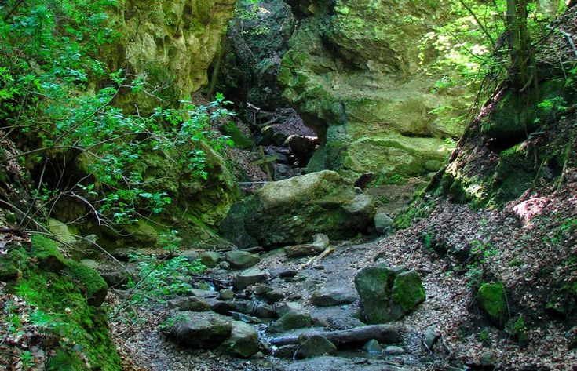
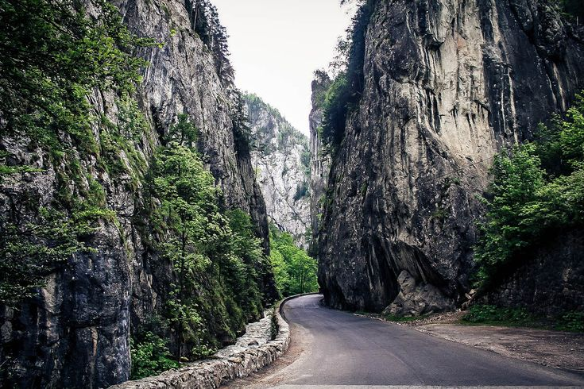
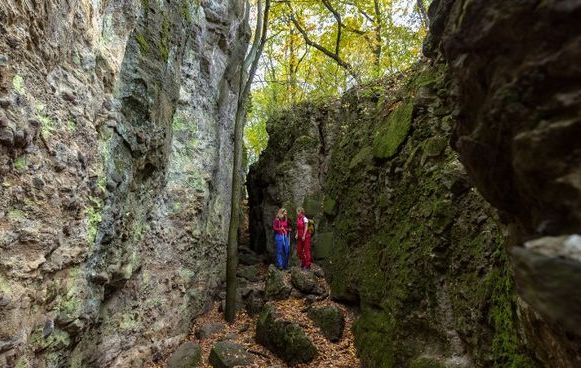
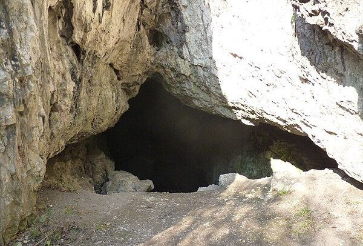

Ajánlataink

Rám-szakadék
Magyarországi alapkirándulóhely Dömös mellett. Minden gyerek imádja, 3 évesektől kezdve a kamaszokig, akár évente el lehet menni velük.

Erdély - Békás-szoros
Monumentális hegyszoros a székelyföldi Gyergyóban (Románia). Itt van a magyar hegymászás bölcsője. Kár, hogy egy aszfaltcsík húzódik a mélyén.

Tisza tó
A Tisza-tó (1988-ig Kiskörei víztározó) Magyarország második legnagyobb tava, az Alföld északi részén.

Vasas-szakadék
Egy nagyon érdekes, szűk sziklahasadék a Pilisben, a Kő-hegyi menedékház közelében.

Remete-szurdok
Szép szurdok Remeteszőlősnél, Buda határában.

Tarcali Bányató
A forrásvizek által feltöltött, türkizkék vizű Tarcali bányató a Tokaji borvidék területén található.